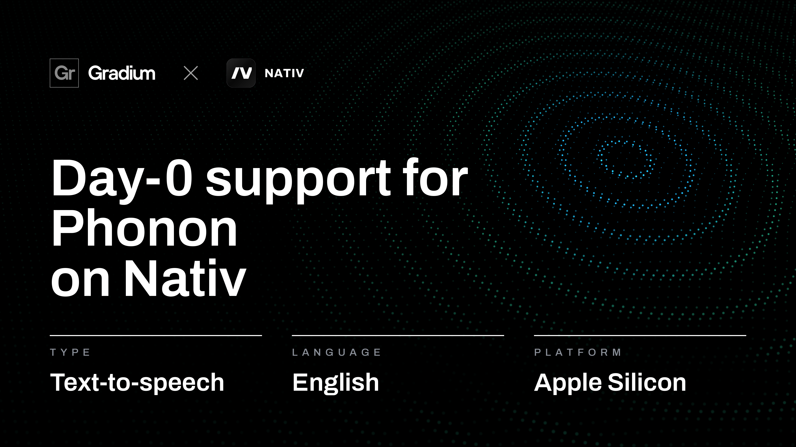
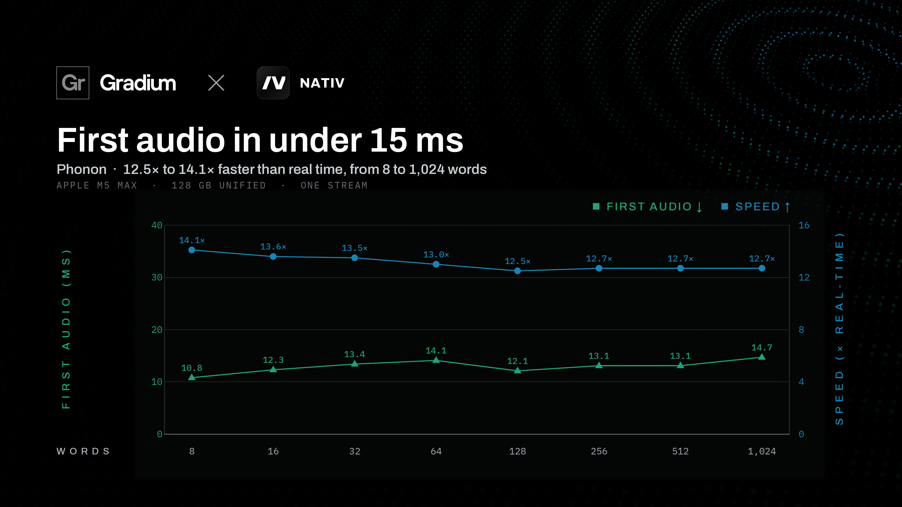
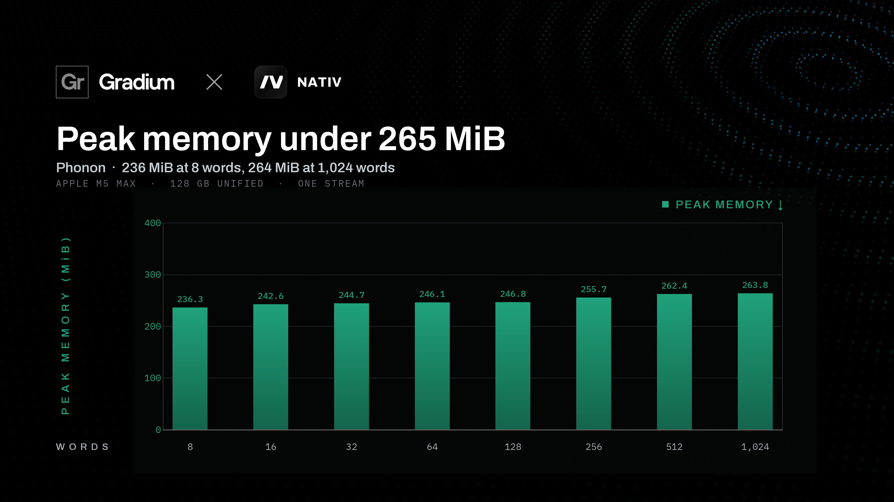

In our M5 Max benchmark, Phonon delivers first audio in 10.8 to 14.7 ms and generates speech at 12.5× to 14.1× real time. Peak memory stays below 265 MiB across inputs from eight to 1,024 words. Here we examine the architecture, the checkpoint’s precision choices, and how performance changes as the text gets longer.
How Phonon generates speech
Phonon builds on the continuous audio language modeling work behind Kyutai’s Pocket TTS. Text tokens and voice conditioning guide a transformer; a flow head generates compact acoustic representations; and a Mimi decoder turns them into speech. [1]
- Text + voiceConditioning
- TransformerSequence context
- Flow headAudio latents
- Mimi24 kHz speech
| Component | Configuration |
|---|---|
| Text tokenizer | Unigram, 4,000-token vocabulary |
| Main transformer | 6 layers, hidden width 768, 12 attention heads |
| Feed-forward width | 3,072 |
| Flow head | Width 512, 6 residual blocks |
| Generated audio latent | 32 dimensions |
| Acoustic frame rate | 12.5 frames per second |
| Flow decoding budget | 1 step per generated latent |
| Mimi decoder transformer | 2 layers, hidden width 512, 8 attention heads |
| Output | Mono speech at 24 kHz |
Configuration for checkpoint revision 5bf39962db15. [2]
The main transformer has six layers, with 12 attention heads and a hidden width of 768. It processes the conditioning and previously generated audio latents to establish the context for the next frame. The flow head then transforms sampled noise into a 32-dimensional latent, while a separate prediction determines when speech should end. [3]
At 12.5 frames per second, each latent represents 80 milliseconds of speech, or 1,920 samples at 24 kHz. This keeps autoregressive generation at a low acoustic frame rate. Mimi reconstructs the waveform through a two-layer decoder transformer and convolutional upsampling.
The checkpoint uses one flow decoding step per latent. The transformer, flow head, and decoder can advance incrementally, so the application can receive audio while later parts of the utterance are still being generated.
Four voices for local speech
The Nativ model package includes Freya, Harper, Sterling, and Toby. Their voice embeddings ship alongside the model weights, providing ready-made conditioning for English speech. Output is mono audio at 24 kHz. The package also supports streaming generation. [4]
The checkpoint uses mixed precision: 24 linear modules in the main transformer use 8-bit affine quantization with groups of 32, and the remaining floating-point tensors use FP16. Its main weights file is 94.7 MB (90.3 MiB). Runtime memory additionally includes activations, caches, and audio buffers.
Speech on the M5 Max


Our benchmark covers eight input lengths, from short replies to extended narration. First audio stays below 15 ms at every length. Generation speed remains above 12× real time, reaching 14.1× for the shortest input.
At 12.7× real time, one second of generation produces about 12.7 seconds of audio. The equivalent real-time factor, measured as generation time divided by audio duration, is approximately 0.079. First-audio latency measures the startup wait; throughput describes how quickly the remaining speech can be produced.
From a short reply to long narration
| Input length | First audio | Generation speed | Peak memory |
|---|---|---|---|
| 8 words | 10.8 ms | 14.1× real time | 236.3 MiB |
| 16 words | 12.3 ms | 13.6× real time | 242.6 MiB |
| 32 words | 13.4 ms | 13.5× real time | 244.7 MiB |
| 64 words | 14.1 ms | 13.0× real time | 246.1 MiB |
| 128 words | 12.1 ms | 12.5× real time | 246.8 MiB |
| 256 words | 13.1 ms | 12.7× real time | 255.7 MiB |
| 512 words | 13.1 ms | 12.7× real time | 262.4 MiB |
| 1,024 words | 14.7 ms | 12.7× real time | 263.8 MiB |
Source: Nativ benchmark charts. Apple M5 Max, 128 GB unified memory, one stream.


Input length increases 128×, while peak memory rises by just 27.5 MiB (11.6%). First-audio time increases by 3.9 ms. At 1,024 words, Phonon still produces speech at 12.7× real time, with first audio in 14.7 ms.
Quality beyond speed
Gradium’s May 2026 evaluation reported 1.00% word error rate with voice cloning and 0.83% with a fixed voice on Seed-TTS English. These published scores describe Gradium’s evaluated release. Our performance charts do not establish the same accuracy for the Nativ checkpoint, or measure its perceptual quality. [5]
What the measurements cover
The figures in this article come from our single-stream benchmark charts on an Apple M5 Max with 128 GB of unified memory. They cover first audio, generation speed, and reported peak memory for eight input lengths.
The charts do not specify warm-up, repetition counts, the exact timing boundary, or whether memory represents active allocations or total process usage. These results should therefore be read as reported synthesis measurements. Application buffering and the audio device also contribute to the time a user waits to hear speech.
A voice for your Mac
For Nativ users, Phonon brings a compact local speech option to the same app they use to run AI on their Mac. Fast startup suits short spoken responses, while sustained generation ahead of playback supports reading and longer narration. The small measured memory footprint leaves room for the rest of the application.
We’re building Nativ so more of these experiences can run on your own hardware. Phonon adds English speech with four bundled voices, streaming output, and the performance to keep pace with interactive use.
Download Nativ / Explore the Phonon checkpoint
Sources and model revision
- Gradium Phonon runtime and architectural lineage
- Nativ checkpoint configuration (revision 5bf39962db15)
- Gradium flow language model implementation
- Nativ Phonon model card and voices
- Gradium’s May 2026 Seed-TTS evaluation
- Nativ: the local AI app for Mac
Architecture and weight details refer to nativ-community/phonon revision 5bf39962db15cba2a7b2b9e47a0303028b7f9e35.